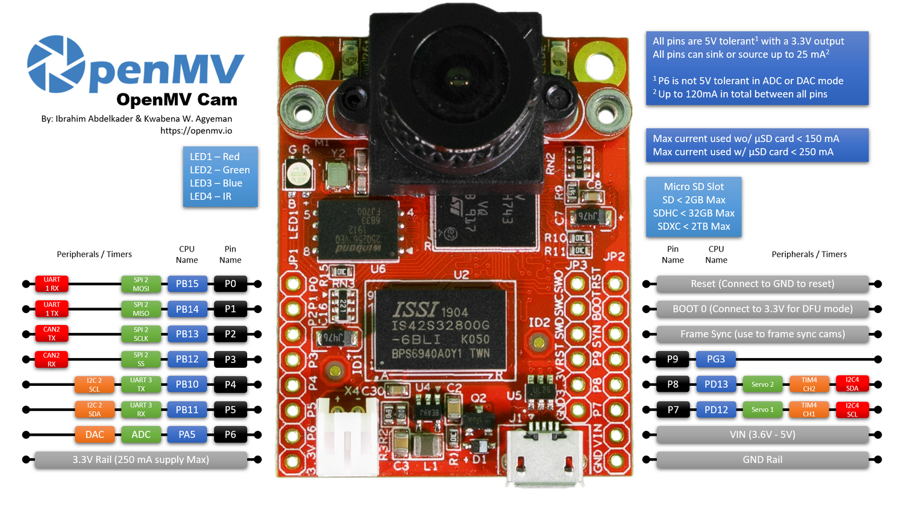

OpenMV Cam H7 Plus¶
OpenMV Cam H7 Plus yhdistää STMicroelectronics STM32H743 -piirin (Cortex‑M7 @ 480 MHz) 32 Mt:n ulkoiseen SDRAM-muistiin, 32 Mt:n QSPI flash-muistiin, laitteistopohjaiseen JPEG-koodekkiin ja OV5640 5MP -kameramoduuliin irrotettavalla kantajalla. Ylimääräinen muisti sopii hyvin korkean resoluution kuvaukseen ja suuriin kuvapuskureihin.

Täydellinen datalehti, valokuvat ja mitat löytyvät OpenMV Cam H7 Plus -tuotesivulta.
Kohokohdat¶
STMicroelectronics STM32H743 Cortex‑M7 480 MHz:n taajuudella (1027 DMIPS).
Laitteistopohjainen JPEG-enkooderi/-dekooderi.
32 Mt ulkoista SDRAM-muistia (32‑bittinen @ 100 MHz, 400 Mt/s) sekä 1 Mt sisäistä SRAM-muistia.
2 Mt sisäistä flash-muistia + 32 Mt ulkoista QSPI flash-muistia (~100 Mt/s luku).
OV5640 5MP rolling‑shutter -sensori.
Full‑speed USB (12 Mb/s) — näkyy isäntäkoneelle VCP- ja USB-massamuistilaitteena.
microSD-paikka — SD enintään 2 Gt, SDHC enintään 32 Gt, SDXC enintään 2 Tt.
LiPo-akkuliitin (ei sisäänrakennettua laturia — käytä ladattua kennoa tai syötä virtaa VIN/USB-liitännästä).
10 I/O-nastaa, 5 V:n sietokyky 3,3 V:n lähdöllä, 25 mA nastaa kohti (yhteensä 120 mA koko liittimessä), keskeytyskykyiset. P6 ei siedä 5 V:a ADC- tai DAC-tilassa käytettäessä.
Käyttäjän RGB-LED ja kaksi suuritehoista 850 nm:n IR-LEDiä aktiiviseen valaistukseen heikossa valossa.
Muista
H7 Plus -mallissa ei ole sisäänrakennettua virranhallintapiiriä: siinä ei ole akkulaturia, akkujännitteen ADC:tä, lataus-/virtatilan LEDejä eikä laitteistopohjaista virtapainiketta. Kytke valmiiksi ladattu LiPo akun JST-liittimeen tai syötä levylle virtaa USB:n / VIN:n kautta.
Nastajärjestys¶
{kind=link}

Nastojen viiteopas¶
Nastan nimi |
Toiminto |
|---|---|
P0 |
UART1 RX / SPI2 MOSI |
P1 |
UART1 TX / SPI2 MISO |
P2 |
SPI2 SCK / FDCAN2 TX |
P3 |
SPI2 NSS (CS) / FDCAN2 RX |
P4 |
I2C2 SCL / UART3 TX / TIM2 CH3 |
P5 |
I2C2 SDA / UART3 RX / TIM2 CH4 |
P6 |
ADC / DAC / TIM2 CH1 |
P7 |
I2C4 SCL / TIM4 CH1 |
P8 |
I2C4 SDA / TIM4 CH2 |
P9 |
digitaalinen I/O |
RESET |
vedä GND:hen nollataksesi levyn |
SYN |
kehyssynkronointi (frame‑sync) -nasta — johdotettu vain kamerasensoriin |
BOOT0 |
vedä 3,3 V:iin virrankytkennän yhteydessä DFU- / ROM-käynnistyslataimeen siirtymistä varten |
LED_RED |
RGB-LEDin punainen kanava (aktiivinen alhaalla) |
LED_GREEN |
RGB-LEDin vihreä kanava (aktiivinen alhaalla) |
LED_BLUE |
RGB-LEDin sininen kanava (aktiivinen alhaalla) |
LED_IR |
suuritehoiset IR-LEDit (molemmat kanavat ohjataan yhdessä) |
Muista
Liittimen SYN-nasta on kytketty suoraan kamerasensorin liipaisu- / valotuslinjaan — se ei reititä MCU:lle H7 Plus -mallissa. Ohjaa tai lue sitä ulkoisesti; sitä ei voi vaihtaa MicroPythonista.
Virtanastat¶
3.3V — säädelty 3,3 V:n linja. Enintään 250 mA käytettävissä lisäkorteille (vähemmän, jos microSD-kortti on käytössä). Toisin kuin uudemmissa kameroissa, tämä nasta on kaksisuuntainen — katso alla oleva varoitus.
VIN — 3,6–5 V:n tulo. Syöttää levylle virtaa sisäänrakennetun säätimen kautta.
GND — yhteinen maa.
Levyllä on myös 3,7 V:n LiPo-liitin, mutta H7 Plus -mallissa ei ole akkulaturia — kytke valmiiksi ladattu kenno tai syötä sen sijaan VIN- / USB-virtaa.
Muista
Kun sekä USB että VIN/LiPo ovat kytkettyinä, VIN/LiPo-tulo voittaa — sisäänrakennettu virtakytkin valitsee sen USB:n sijaan levyn virransyöttöön.
Varoitus
Akkuliitin ja VIN on kytketty yhteen H7 Plus -mallissa. Älä kytke LiPo-akkua ja syötä VIN-virtaa samanaikaisesti — kaksi virtalähdettä taistelevat keskenään ja voivat vahingoittaa akkua, levyä tai molempia.
Varoitus
Voit syöttää H7 Plus -mallille virtaa syöttämällä 3,3 V suoraan 3.3V-nastaan, jos et halua kulkea sisäänrakennetun säätimen kautta. Tässä tapauksessa älä syötä samanaikaisesti myös VIN- tai USB-virtaa — säätimen taaksepäin ajaminen toisen virtalähteen ollessa aktiivinen voi vahingoittaa pysyvästi ja tuhota kameran.
Vihje
Käytä akun keston arviointityökalua mallintaaksesi, kuinka kauan H7 Plus toimii akulla tietyllä aktiivisen / syvän unen käyttöjaksolla.
Palautus- ja virheenkorjausnastat¶
RESET — vedä GND:hen nollataksesi levyn. Sen vapauttaminen antaa MCU:n käynnistyä normaalisti.
BOOT0 — vedä 3,3 V:iin levyä virrankytkettäessä siirtyäksesi STM32-ROM-käynnistyslataimeen (DFU-tila). OpenMV IDE käyttää tätä tilaa sisäänrakennetun käynnistyslataimen uudelleenflashaukseen.
Levyssä on SWD-virheenkorjausliitin (RST / SWCLK / SWDIO / SWO) GPIO-liittimen vieressä, yhteensopiva ST‑LINK- ja SEGGER J‑Link -sovittimien kanssa.
Muista
SWO-jäljitysnasta on jaettu kameraliittimen SPI-kellolinjan kanssa. SWO:ta ei voi käyttää samanaikaisesti minkään SPI:n kautta MCU:n kanssa kommunikoivan kameramoduulin kanssa — esimerkiksi FLIR® Lepton® Adapter Module -moduulin — valitse jompikumpi.
Sisäänrakennetut oheislaitteet¶
LEDit¶
H7 Plus -mallissa on yksi käyttäjän RGB-LED sekä pari suuritehoista 850 nm:n IR-LEDiä:
Käyttäjän RGB-LED — ohjelmistolla ohjattava, esitetty muodoissa
LED_RED,LED_GREENjaLED_BLUEfrom machine import LED LED("LED_RED").on() LED("LED_GREEN").on() LED("LED_BLUE").on()
IR-LEDit — molemmat LEDit ohjataan yhdessä
LED_IR-nastan kautta.LED_IRon johdotettu laitteistossa aktiiviseksi ylhäällä (active high), kun taas laiteohjelmisto käsittelee jokaista muuta sisäänrakennettua LEDiä aktiivisena alhaalla, joten käytälow()/high()‑metodeja eikäon()/off()‑metodeja (jotka kääntäisivät logiikan):from machine import LED ir = LED("LED_IR") ir.low() # turn IR illumination ON ir.high() # turn IR illumination OFF
Kamerasensori¶
OV5640:tä ohjataan csi — kennot -moduulin kautta:
import csi
cam = csi.CSI()
cam.reset()
cam.pixformat(csi.RGB565)
cam.framesize(csi.QVGA)
cam.snapshot(time=2000) # let auto‑exposure settle
while True:
img = cam.snapshot()
OV5640:ssä on sisäänrakennettu JPEG-pakkain. Aseta csi.CSI.pixformat arvoon csi.JPEG, niin sensori toimittaa pakatut kehykset suoraan kameralle kameraväylän kautta, mikä tekee korkean resoluution kuvauksista käytännöllisiä: csi.HD (1280×720), csi.FHD (1920×1080) ja täysi 5MP csi.WQXGA2 (2592×1944) virtaavat kaikki JPEG-muodossa. Säädä pakkausta csi.CSI.quality -arvolla (0-100, suurempi = isommat kehykset, enemmän yksityiskohtia):
{kind=link}
cam.pixformat(csi.JPEG)
cam.framesize(csi.WQXGA2)
cam.quality(90)
Sensori sijaitsee irrotettavassa moduulissa — vaihda se mihin tahansa muuhun OpenMV-kameramoduuliin (global shutter, lämpö, korkeampi resoluutio jne.) muuttamatta muuta osaa levystä.
Koneoppiminen¶
ml — Koneoppiminen suorittaa kvantisoituja TFLite-malleja Cortex‑M7:llä CMSIS‑NN -ytimillä — riittävän nopeasti kompakteille tunnistimille muutamalla kehyksellä sekunnissa. Vain luku ‑tilassa olevan /rom-tiedostojärjestelmän mallit ladataan suoraan flash-muistista kopioimatta niitä RAM-muistiin. Tässä 128×128 BlazeFace -tunnistin, joka piirtää tunnistetut kasvot ja niiden kuusi maamerkkiä jokaiseen kehykseen:
import csi
import time
import ml
from ml.postprocessing.mediapipe import BlazeFace
# Initialize the sensor.
csi0 = csi.CSI()
csi0.reset()
csi0.pixformat(csi.RGB565)
csi0.framesize(csi.VGA)
csi0.window((400, 400))
# Load built-in face detection model
model = ml.Model("/rom/blazeface_front_128.tflite", postprocess=BlazeFace(threshold=0.4))
print(model)
clock = time.clock()
while True:
clock.tick()
img = csi0.snapshot()
# faces is a list of ((x, y, w, h), score, keypoints) tuples
for r, score, keypoints in model.predict([img]):
ml.utils.draw_predictions(img, [r], ("face",), ((0, 0, 255),), format=None)
# keypoints is a ndarray of shape (6, 2)
# 0 - right eye (x, y)
# 1 - left eye (x, y)
# 2 - nose (x, y)
# 3 - mouth (x, y)
# 4 - right ear (x, y)
# 5 - left ear (x, y)
ml.utils.draw_keypoints(img, keypoints, color=(255, 0, 0))
print(clock.fps(), "fps")
microSD-kortti¶
Kun kortti on asetettu paikalleen, se liitetään automaattisesti polkuun /sdcard ja on käytettävissä tavallisen tiedostojärjestelmän kautta:
import os
for entry in os.listdir("/sdcard"):
print(entry)
Väyläviiteopas¶
GPIO¶
Käytä machine.Pin -luokkaa lukeaksesi tai ohjataksesi mitä tahansa silkkipainettua nastaa. Lähdöt ovat 3,3 V CMOS, 5 V:n sietokyky tulopuolella ja voivat upottaa/lähettää enintään 25 mA nastaa kohti (yhteensä 120 mA koko liittimessä).
from machine import Pin
out = Pin("P0", Pin.OUT)
out.on()
out.off()
out.value(1)
inp = Pin("P1", Pin.IN, Pin.PULL_UP)
print(inp.value())
Mikä tahansa tulonasta voi myös laukaista keskeytyksen reunasiirtymillä:
def handler(pin):
print("triggered:", pin)
Pin("P1", Pin.IN, Pin.PULL_UP).irq(
handler, Pin.IRQ_FALLING | Pin.IRQ_RISING,
)
UART¶
Väylä |
TX |
RX |
|---|---|---|
UART1 |
P1 |
P0 |
UART3 |
P4 |
P5 |
from machine import UART
uart = UART(3, baudrate=115200)
uart.write("hello")
uart.read(5)
I²C¶
Väylä |
SCL |
SDA |
|---|---|---|
I2C2 |
P4 |
P5 |
I2C4 |
P7 |
P8 |
from machine import I2C
i2c = I2C(2, freq=400_000)
i2c.scan()
i2c.writeto(0x76, b"hi")
Samaa laitteistoa voi käyttää myös kohdetilassa (slave) machine.I2CTarget -luokan kautta paljastaaksesi muistialueen toiselle I²C-ohjaimelle:
from machine import I2CTarget
buf = bytearray(32)
target = I2CTarget(2, addr=0x42, mem=buf)
SPI¶
Väylä |
MOSI |
MISO |
SCK |
CS |
|---|---|---|---|---|
SPI2 |
P0 |
P1 |
P2 |
P3 |
from machine import SPI
from machine import Pin
spi = SPI(2, baudrate=10_000_000)
cs = Pin("P3", Pin.OUT, value=1) # CS is not driven by the SPI peripheral
cs.value(0)
spi.write(b"hello")
cs.value(1)
CAN (FDCAN)¶
Väylä |
TX |
RX |
|---|---|---|
FDCAN2 |
P2 |
P3 |
from machine import CAN
can = CAN(2, 500_000)
can.set_filters(None)
can.send(0x123, b"\xDE\xAD\xBE\xEF")
print(can.recv())
ADC ja DAC¶
P6 on ainoa käyttäjän analoginen nasta. Sitä voidaan käyttää joko 12‑bittisenä ADC-tulona tai DAC-lähtönä.
ADC — täysi asteikko 3,3 V:ssa nastassa:
from machine import ADC import time adc = ADC("P6") while True: voltage = adc.read_u16() * 3.3 / 65535 print(voltage) time.sleep_ms(100)
DAC —
pyb.DAC-luokan kautta. 8‑bittinen arvo kattaa 0–3,3 V:from pyb import DAC dac = DAC("P6") voltage = 1.65 dac.write(int(voltage / 3.3 * 255))
ADC- tai DAC-tilassa P6 sietää vain 3,3 V:a — älä syötä siihen 5 V:a.
PWM¶
Nasta |
Ajastin / kanava |
|---|---|
P4 |
TIM2 CH3 |
P5 |
TIM2 CH4 |
P6 |
TIM2 CH1 |
P7 |
TIM4 CH1 |
P8 |
TIM4 CH2 |
Muista
TIM1 on varattu laiteohjelmistolle kamerasensorin pikselikellon generointiin, joten fyysisesti nastoissa P0/P1/P2 olevia TIM1-kanavia ei voi käyttää käyttäjän PWM:ään kameraa rikkomatta.
TIM4 on jaettu pyb.Servo -luokan kanssa — servon instansiointi konfiguroi koko ajastimen uudelleen 50 Hz:n toimintaan, joten älä sekoita machine.PWM -käyttöä nastoissa P7/P8 pyb.Servo -luokan kanssa samassa skriptissä.
Ohjaa mitä tahansa niistä machine.PWM -luokan kautta:
from machine import Pin, PWM
pwm = PWM(Pin("P7"), freq=1_000, duty_u16=32768)
Ohjelmistolla bit‑banged-väylät¶
machine.SoftI2C ja machine.SoftSPI toimivat millä tahansa GPIO:lla, jos tarvitset lisäväylän.
Lämpösensori (levyn ulkopuolinen)¶
Laiteohjelmisto sisältää fir — lämpösensorin ajuri (fir == far infrared) -ajurin ulkoisesti johdotetuille lämpökameroille:
MLX90621 — 16 × 4 IR-matriisi
MLX90640 — 32 × 24 IR-matriisi
MLX90641 — 16 × 12 IR-matriisi
AMG8833 — 8 × 8 IR-matriisi
Johdota moduuli levyn I²C-väylään ja lue kehykset komennoilla fir.init() + fir.snapshot()
import time
import image
import fir
fir.init() # auto‑detects the sensor
clock = time.clock()
while True:
clock.tick()
try:
img = fir.snapshot(x_scale=5, y_scale=5,
color_palette=image.PALETTE_IRONBOW,
hint=image.BICUBIC,
copy_to_fb=True)
except OSError:
continue
print(clock.fps())
fir-ajuri kommunikoi sensorin kanssa vain I²C 2 -väylän kautta — johdota moduuli nastoihin P4 (SCL) ja P5 (SDA).
Ajoitus¶
time¶
time -moduuli kattaa estävät viiveet, monotoniset tikit ja kuluneen ajan mittauksen:
import time
time.sleep(1) # seconds
time.sleep_ms(500)
time.sleep_us(10)
start = time.ticks_ms()
# ...do work...
elapsed = time.ticks_diff(time.ticks_ms(), start)
Virtuaaliset ajastimet¶
machine.Timer ajoittaa jaksottaisia tai kertaluonteisia takaisinkutsuja kuluttamatta laitteistoajastinpaikkaa. Anna id:ksi -1 käyttääksesi virtuaalista (ohjelmisto)ajastinta:
from machine import Timer
one_shot = Timer(-1)
one_shot.init(period=5_000, mode=Timer.ONE_SHOT,
callback=lambda t: print("once"))
periodic = Timer(-1)
periodic.init(period=2_000, mode=Timer.PERIODIC,
callback=lambda t: print("tick"))
Jaksoarvot ovat millisekunteina. Kutsu deinit() pysäyttääksesi ja vapauttaaksesi paikan.
Reaaliaikakello¶
machine.RTC ylläpitää seinäkelloaikaa nollausten yli:
from machine import RTC
rtc = RTC()
rtc.datetime((2026, 4, 30, 4, 12, 0, 0, 0)) # Y, M, D, weekday, h, m, s, subsec
print(rtc.datetime())
Vahtikoira¶
machine.WDT nollaa levyn, jos sovellus jumiutuu. Kun se on käynnistetty, sitä ei voi pysäyttää tai konfiguroida uudelleen — syötä sitä jaksottaisesti pääsilmukassasi:
from machine import WDT
wdt = WDT(timeout=5_000) # 5 second window
while True:
# ...do work...
wdt.feed()
Käynnistys- ja ajonaikaiset tiedot¶
USB-käynnistyslataimen aikaikkuna¶
Jokaisen virrankytkennän yhteydessä kamera suorittaa lyhyen käynnistyslataimen (muutaman sekunnin), jonka avulla OpenMV IDE voi päivittää laiteohjelmiston ilman, että käyttäjän tarvitsee siirtyä DFU-tilaan. Kun aikaikkuna umpeutuu, käynnistyslatain luovuttaa ohjauksen tiedostolle boot.py ja sitten main.py.
Käynnissä oleva skripti voi siirtyä takaisin käynnistyslataimeen pyydettäessä kutsumalla machine.bootloader()
import machine
machine.bootloader()
Tiedostojärjestelmä ja käynnistysjärjestys¶
H7 Plus -laiteohjelmisto liittää käynnistyksen yhteydessä enintään kolme tiedostojärjestelmää:
Sisäinen flash-muisti — aina liitettynä polkuun
/flash. Sisältää oletuksena tiedostotmain.pyjaREADME.txt; luodaan aivan ensimmäisellä käynnistyksellä.microSD-kortti — jos kortti on asetettu paikalleen, se liitetään polkuun
/sdcard.ROMFS — vain luku ‑tilainen, muistiin kartoitettu tiedostojärjestelmä polussa
/rom, jota käytetään suurten data-aineistojen (esim. tekoälymallien) toimittamiseen, jotka hyötyvät zero-copy-pääsystä. MicroPython liittää sen automaattisesti käynnistyksen yhteydessä ennen kuin mikään käyttäjän Python-koodi suoritetaan.
Liittämisen jälkeen työhakemistoksi asetetaan /sdcard, kun kortti on paikallaan, muuten /flash. Tulkki suorittaa sitten skriptit kyseisestä hakemistosta:
boot.pysuoritetaan jokaisen pehmeän nollauksen yhteydessä (kylmäkäynnistys,Ctrl‑DREPL:stä tai aina kun käynnissä oleva skripti palaa).main.pysuoritetaan vain kylmäkäynnistyksessä, heti tiedostonboot.pyjälkeen. Myöhemmät pehmeät nollaukset suorittavatboot.py-tiedoston uudelleen mutta siirtyvät suoraan REPL:iin — suorittaaksesimain.py-tiedoston uudelleen sinun on nollattava levy kokonaan.
boot.py- tai main.py-tiedoston pudottaminen SD-kortille ohittaa flash-muistissa olevan kopion koskematta siihen — molemmat tiedostot etsitään käynnistyshakemistosta (/sdcard, kun kortti on liitettynä, muuten /flash).
Vasta flashatun levyn mukana toimitettu oletustiedosto main.py vain vilkuttaa käyttäjän RGB-LEDin sinistä kanavaa sydämenlyöntinä (kaksi lyhyttä pulssia, lyhyt tauko), jotta voit todeta laiteohjelmiston käynnistyneen puhtaasti ilman isäntäkonetta.
sys.path laajennetaan sisältämään kaikki kolme tiedostojärjestelmää ja niiden lib/-alihakemistot, joten tuotavat moduulit voivat sijaita poluissa /flash/lib, /sdcard/lib tai /rom/lib.
Pakottaaksesi järjestelmän ohittamaan asetetun SD-kortin (esimerkiksi suorittaaksesi flash-muistin main.py-tiedoston, vaikka kortti on paikallaan), luo tyhjä tiedosto nimeltä SKIPSD polun /flash juureen.
USB:n kautta yhdistettynä käynnistystiedostojärjestelmä (/sdcard, jos kortti on paikallaan, muuten /flash) näkyy isäntäkoneella myös USB-massamuistiasemana, jolloin voit muokata tiedostoja boot.py, main.py ja muita tiedostoja suoraan. Poista asema turvallisesti ennen kameran nollaamista, jotta isäntäkone tyhjentää välimuistissa olevat kirjoitukset.
Muista
Koska käyttöjärjestelmä käsittelee asemaa passiivisena lohkolaitteena, OpenMV Camissa suoritettavan koodin luomat tai muokkaamat tiedostot eivät näy ennen kuin isäntäkone liittää aseman uudelleen. Jos sekä käyttöjärjestelmä että OpenMV Cam kirjoittavat samaan tiedostojärjestelmään samanaikaisesti, käyttöjärjestelmä voittaa ja korvaa kameran tekemät muutokset. Käytä SD-korttia kaikelle skriptin takaisin kirjoittamalle datalle ja liitä asema uudelleen ennen kuin luet näitä tiedostoja isäntäkoneelta.
Muista
Käyttäjän RGB-LEDin punainen kanava voi syttyä hetkellisesti, kun isäntäkone lukee USB-massamuistiasemalta tai kirjoittaa sille — tämä on laiteohjelmiston ohjaama aktiivisuusilmaisin, ei vika.
Tallennustilan koot¶
H7 Plus toimitetaan seuraavasti:
/flash— 24 Mt FAT-tiedostojärjestelmä, luku/kirjoitus./rom— 8 Mt vain luku ‑tilainen muistiin kartoitettu ROMFS, jota käytetään skriptien ja ML-mallien toimittamiseen, jotka hyötyvät zero-copy-mmap-pääsystä./sdcard— asetetun microSD-kortin (kun paikalla) koko kokonaisuudessaan, luku/kirjoitus.
Vakavan virheen ilmaisin¶
Jos käyttäjän RGB-LED kiertää nopeasti kaikkien värien läpi — niin nopeasti, että se näyttää yleensä tuikkivalta valkoiselta LEDiltä erillisten sävyjen sijaan — laiteohjelmisto on kohdannut palautumattoman vakavan virheen (hard fault). Flashaa laiteohjelmisto uudelleen palautuaksesi; jos uudelleenflashaus ei auta, levy voi olla fyysisesti vaurioitunut.
Ohjelmistokirjastot¶
Katso kirjastohakemistosta täydellinen lista moduuleista — mukaan lukien ne, jotka ovat ainutlaatuisia H7 Plus -koontiversiolle.